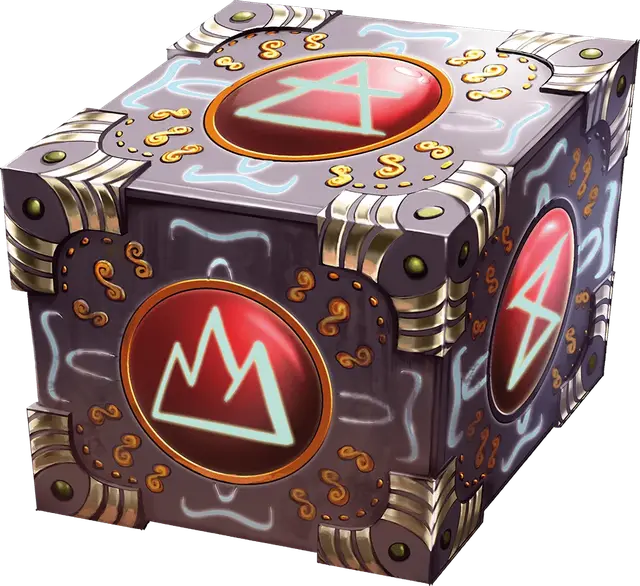

Куб врат
Cubic Gate
Чудесный предмет, легендарный

Рекомендованная стоимость от 50 001 зм
Это куб с длиной ребра 3 дюйма, излучающий ощутимую на ощупь магическую энергию. Все шесть граней этого куба связаны с разными планами существования, причём один из них — Материальный План. Остальные планы определяет Мастер.
Вы можете действием нажать на одну из граней куба, чтобы наложить им заклинание врата [gate], создающее портал на план, связанный с этой гранью. В качестве альтернативы, если вы действием нажмёте на одну грань дважды, вы можете наложить кубом заклинание уход в иной мир [plane shift] (Сл спасброска 17), перенося целей на план, связанный с этой гранью.
У этого куба есть 3 заряда. Каждое использование куба тратит 1 заряд. Куб ежедневно восстанавливает 1к3 заряда на рассвете.